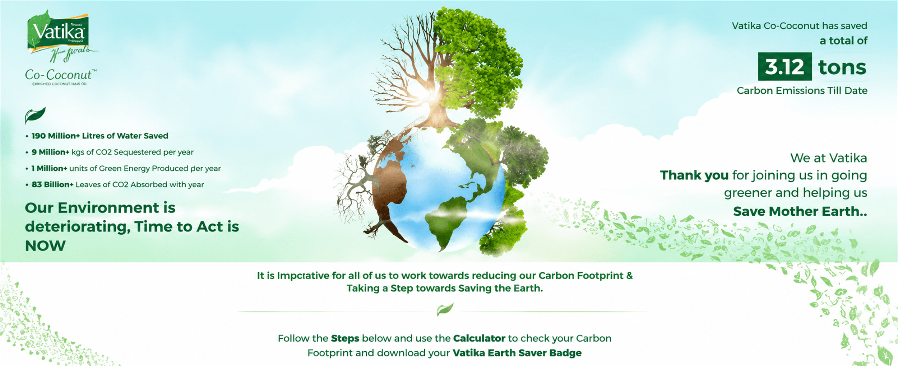
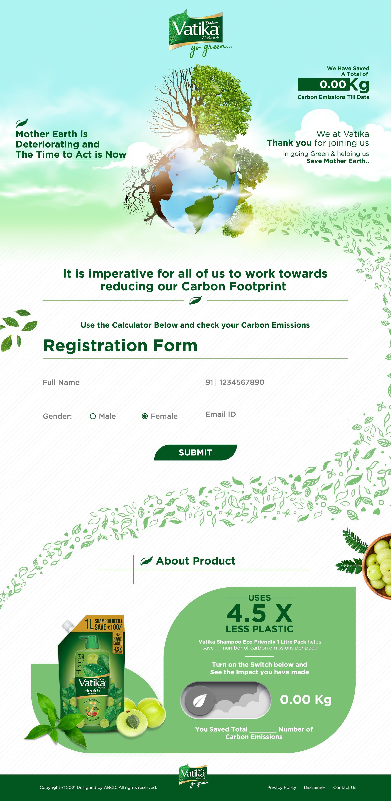
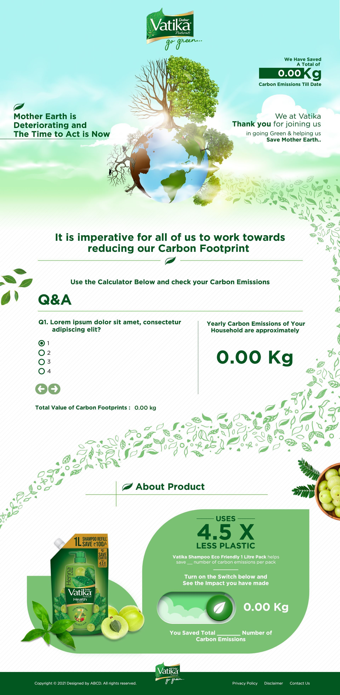
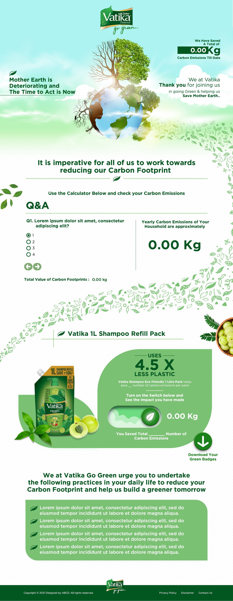
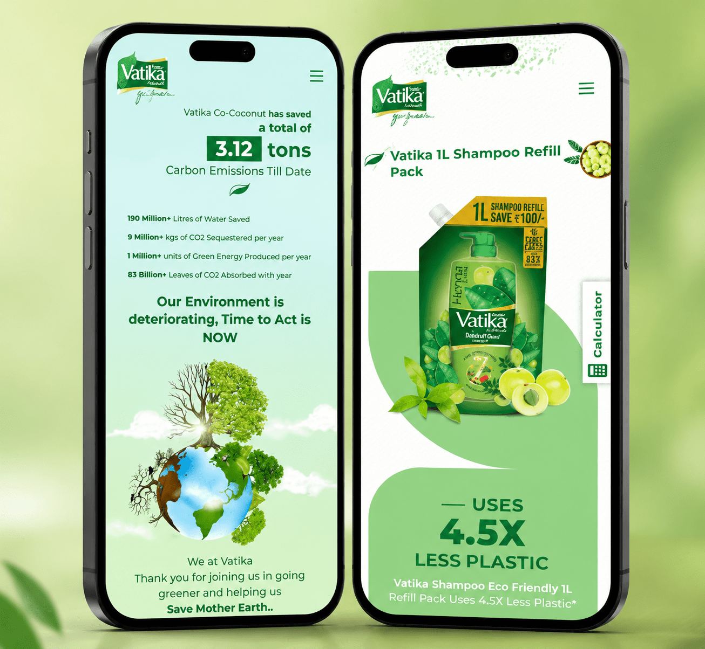

Learn
Introduce the refill initiative and make the environmental rationale easy to understand.
Vatika · Sustainability Application
An interactive platform that connects a lower-plastic refill format with personal carbon awareness—and gives every participant a visible role in the story.

Project overview
Environmental progress can feel distant when it is presented only as a corporate number.
Vatika Goes Green reframed the story as participation: understand the refill’s role, calculate personal carbon impact, see collective progress and carry the action forward through a downloadable badge.
The organising idea
The experience brings brand commitment and individual behaviour into one connected loop—so progress is understood, calculated and shared.
The participation loop
Introduce the refill initiative and make the environmental rationale easy to understand.
Turn personal inputs into a visible carbon-impact result.
Connect a lower-plastic pack choice with the user’s own contribution.
Reward participation with an Earth Saver badge designed to be shared.
The platform in practice



Responsive by design
The experience keeps the impact counter, refill story and calculator within reach on mobile—where participation and sharing naturally happen.

The outcome
By joining product education, a live impact counter, personal calculation and shareable recognition, the application makes environmental action easier to understand and more meaningful to join.
The refill’s lower-plastic story is connected to a larger environmental purpose.
The calculator translates an abstract footprint into an individual result.
The Earth Saver badge gives participation a recognisable social expression.
Less passive awareness.More measurable action.
Building an application with purpose?